| name | input | export_new_L1 | export_new_L1_5 | export_new_L1_7 | export_new_1_L1 | export_new_1_L1_1 |
|---|
| .ipynb_checkpoints |  |  |  |  |  |  |
| 1.png |  |  | 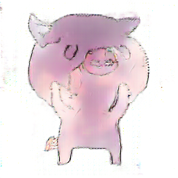 | | | |
| 10.png |  |  | 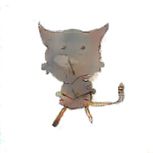 | | |  |
| 11.png | 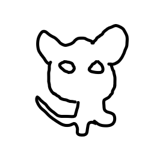 |  | 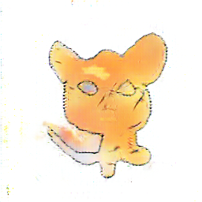 | | |  |
| 12.png |  |  | | | | |
| 13.png | 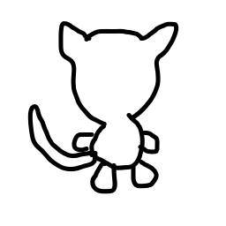 |  |  | | |  |
| 14.png |  |  |  | | |  |
| 15.png |  |  | 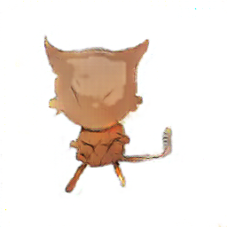 | | |  |
| 16.png | |  | 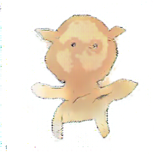 | | |  |
| 17.png | 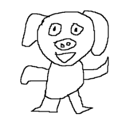 |  | | | |  |
| 18.png |  |  |  | | | 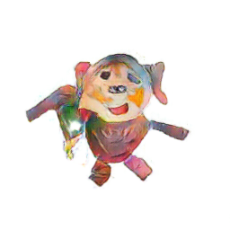 |
| 19.png |  | 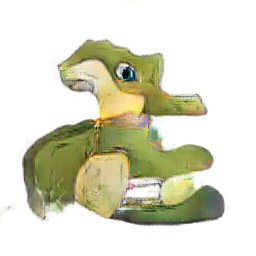 | 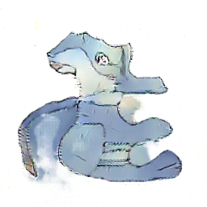 | | |  |
| 2.png |  |  | | | |  |
| 20.png | | 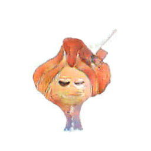 |  | | |  |
| 21.png |  |  | 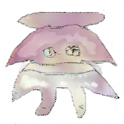 | | | |
| 22.png |  |  | 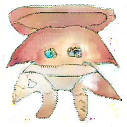 | | |  |
| 23.png | | 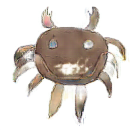 |  | | |  |
| 24.png | | |  | | | |
| 25.png |  |  |  |  | |  |
| 26.png | 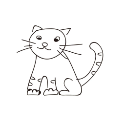 |  | 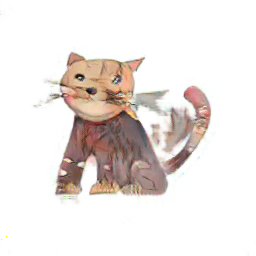 | | | |
| 27.png | |  |  | | |  |
| 28.png | 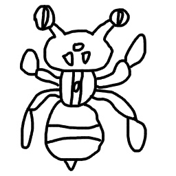 | 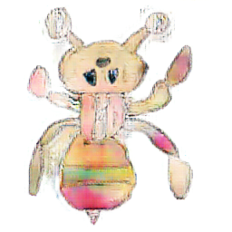 |  | |  | 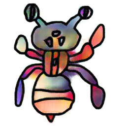 |
| 29.png | |  | | | |  |
| 3.png |  |  |  | | |  |
| 30.png |  | 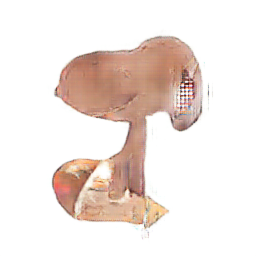 | 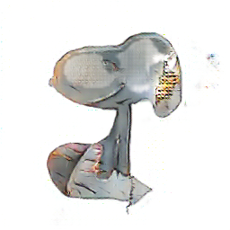 | | | |
| 31.png |  | 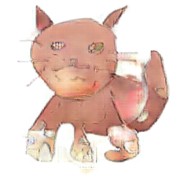 |  | |  |  |
| 32.png | | |  | | | |
| 33.png | |  |  | | | |
| 34.png | 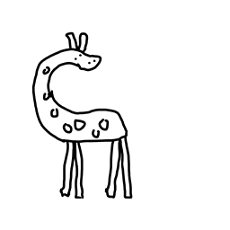 | 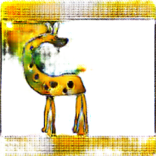 | 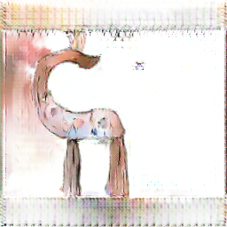 | | | 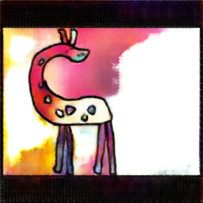 |
| 35.png | 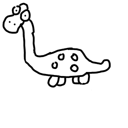 |  |  | | |  |
| 36.png | 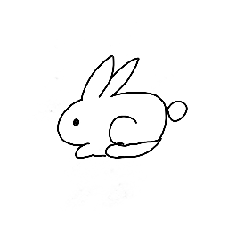 | 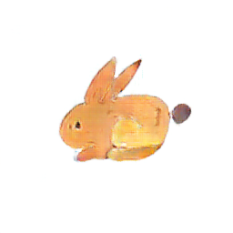 |  | | |  |
| 37.png | |  | 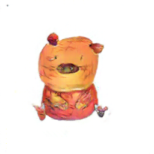 | | | 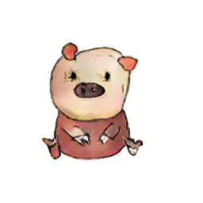 |
| 38.png |  | 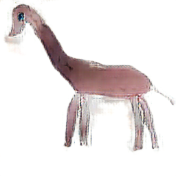 | 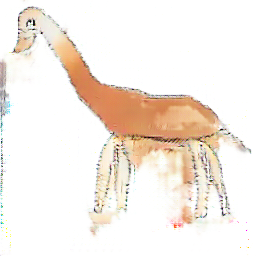 | | |  |
| 39.png | 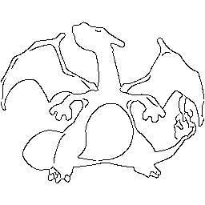 |  |  | | | 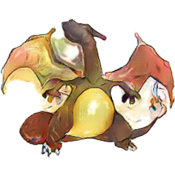 |
| 4.png |  |  | 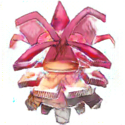 | |  | 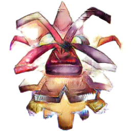 |
| 40.png |  |  |  | 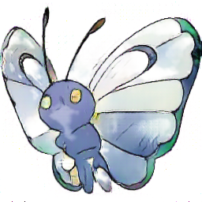 | |  |
| 41.png |  | 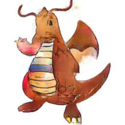 |  | | |  |
| 5.png |  |  | 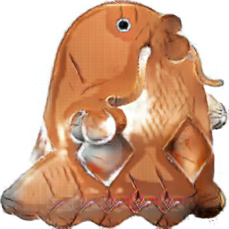 | | | 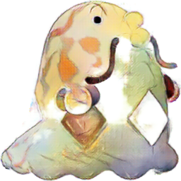 |
| 6.png | 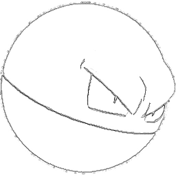 | 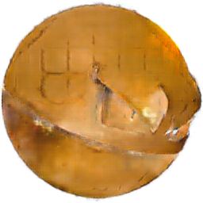 |  | |  | 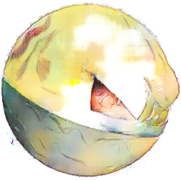 |
| 7.png |  | 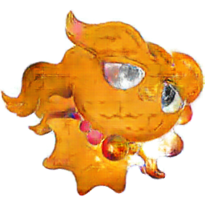 | 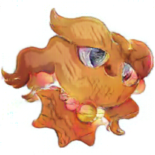 | | | 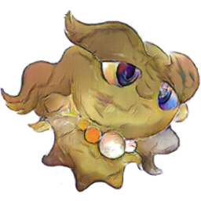 |
| 8.png | |  | 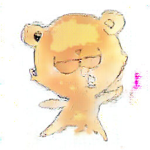 | | | |
| 9.png |  |  |  | | | |